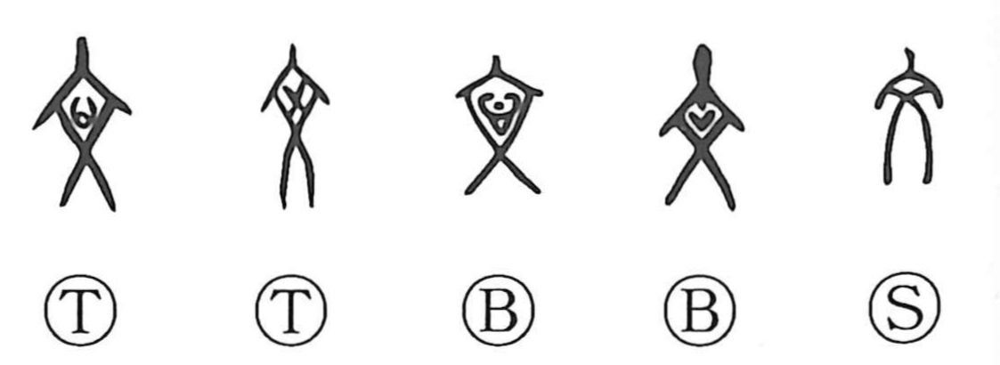

Explanation
文 pictures a person facing forward with a design marked on the chest. Early forms show a heart-like shape, a cross, or a chevron within the body's outline. These were probably temporary ritual markings applied to a dead person.
Body decoration protected and consecrated the person at a passage between conditions. Related 爽 concerns vermilion chest marks warding harmful spirits away from the dead; 産 and 彦 connect marking with birth and a young man's attainment of adulthood. The visible design gives the body a specially adorned state.
From this come pattern, colour, decoration, and refinement. 章 pictures a tattooing needle with ink gathered at its point, joining the beauty of marking to 文 in 文章. Patterned adornment then extends to composed expression: 文 becomes a written text or literary work. The same ordering of visible forms underlies decoration and writing.